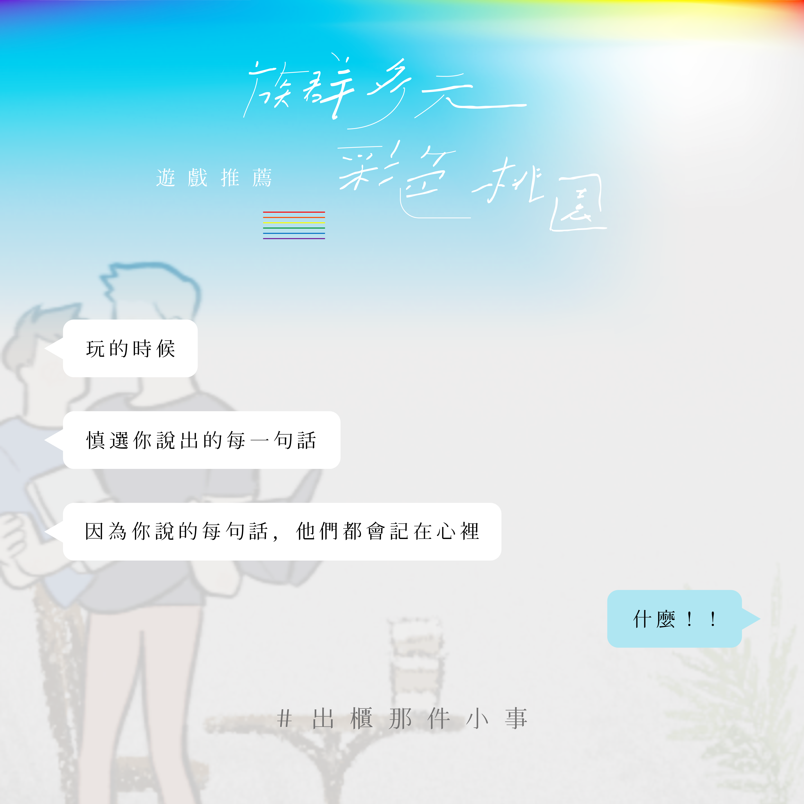
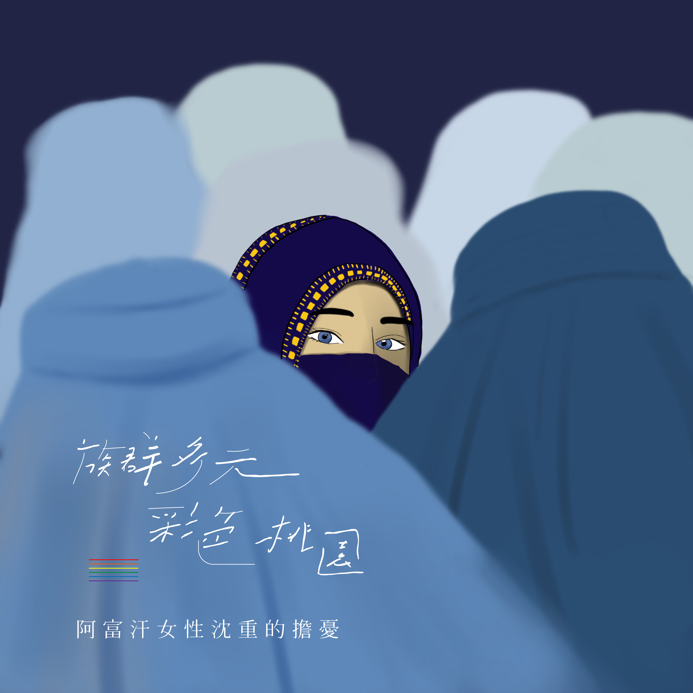
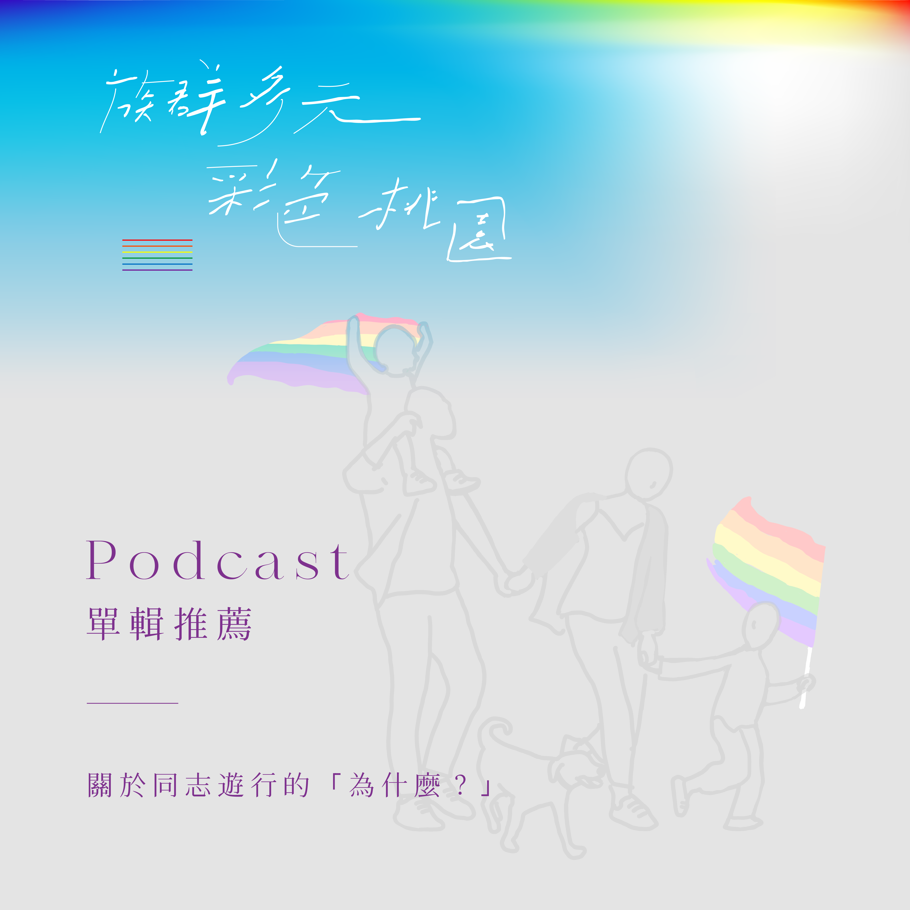
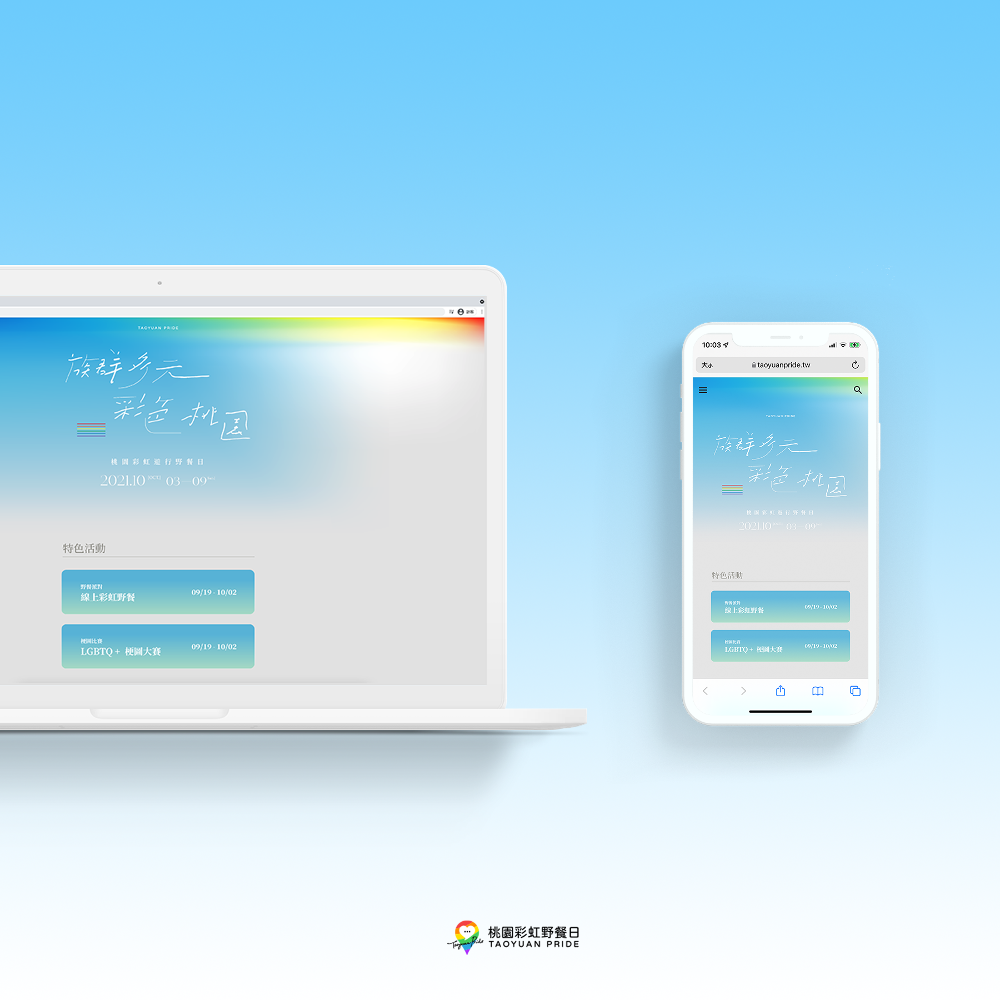

族群多元，彩色桃園
去年的桃園彩虹野餐日，我們以各種家庭的樣貌揭開序曲。今年，我們想以族群為核心。在桃園這座由許多不同族群所構成的城市裡，
有五大族群：客家、閩南、外省、原住民、新住民，以及兒童、青少年、外籍移工等不同群體。每天一起生活在這此，卻很少有深入的交集。
即使是同婚法已經通過的現在，各種性別刻板印象與歧視，還是充斥在生活當中。從兒童服裝與玩具的選擇，到青少年的自我認知與探索，往往都會受到這社會的諸多限制與規範。
而隻身來到陌生國度生活與工作的新住民和外籍移工，更是飽受文化差異的衝擊。
我們希望透過彩虹野餐日的活動，讓更多元的族群樣貌得以呈現，無論年齡、族群、性向、國籍、種族、宗教信仰，都不影響我們身而為人應有的平等。
邀請大家在這一天一同上街，讓同樣生活在這座城市的我們，能夠有更多機會看見彼此的差異，理解彼此的獨特，
因為有這些形形色色的族群交織在一起，在這座城市共榮共存，讓桃園，充滿著多元的色彩。
有五大族群：客家、閩南、外省、原住民、新住民，以及兒童、青少年、外籍移工等不同群體。每天一起生活在這此，卻很少有深入的交集。
即使是同婚法已經通過的現在，各種性別刻板印象與歧視，還是充斥在生活當中。從兒童服裝與玩具的選擇，到青少年的自我認知與探索，往往都會受到這社會的諸多限制與規範。
而隻身來到陌生國度生活與工作的新住民和外籍移工，更是飽受文化差異的衝擊。
我們希望透過彩虹野餐日的活動，讓更多元的族群樣貌得以呈現，無論年齡、族群、性向、國籍、種族、宗教信仰，都不影響我們身而為人應有的平等。
邀請大家在這一天一同上街，讓同樣生活在這座城市的我們，能夠有更多機會看見彼此的差異，理解彼此的獨特，
因為有這些形形色色的族群交織在一起，在這座城市共榮共存，讓桃園，充滿著多元的色彩。




